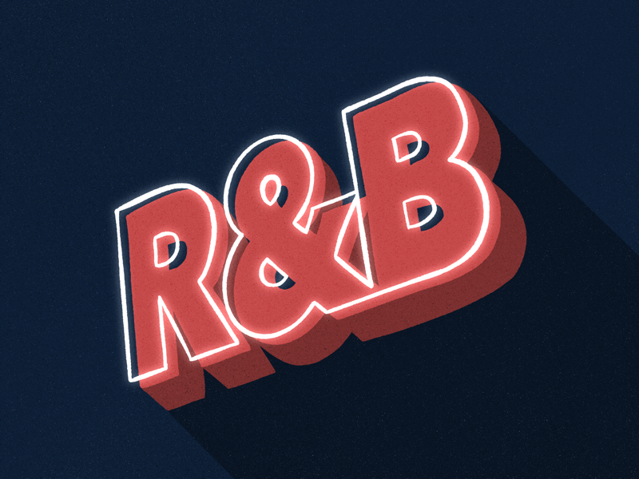

R&B
미국의 음악 장르 중 하나로 리듬 앤 블루스(Rhythm and blues)의 약자. 1940년대 말부터 1950년대 초에 미국 흑인들 사이에서 가스펠, 블루스에 댄스풍 재즈 리듬이 섞여 탄생한 음악 장르이다. 비교적 우울한 분위기에 고단한 삶을 노래하는 경우가 많았던 블루스에 비해 그루브가 강하고, 남녀간의 사랑에 관한 통속적인 내용이 주가 되었다. 물론 모든 R&B가 남녀간 무드만 잡는 노래를 한 건 아니다.
그루브(groove): 그루브란 음악의 리듬을 조합하여 만들어내는 흥겨운 느낌이다. R&B의 그루브는 블루 노트에 얹어진 싱커페이션을 자유자재로 구사하면서 보컬의 리듬 자유도를 극대화시킨다. 미국 흑인들 사이에서 발전한 음악인 만큼 그들이 가지고 있는 감성과 기교 등이 들어가 있기 때문에 딱 정의 내리기는 어렵다. 그리고 현대에 와서 나뉘는 여러 하위 장르들은 여러 장르와 음악적인 결합을 시도하고 있기 때문에 더더욱 정의를 내리고 음악을 분류하는 것이 힘들다. 어느 사조 속에서 나온 음악들이 묶여 장르가 된다고 보는 것이 좋은 편.
즉흥성: 흑인 음악에서 탄생한 장르 답게 즉흥적인 면이 강하다. 노래 중간중간 애드리브를 많이 넣기도 하며 공연 시에 재즈처럼 즉흥연주를 통해서 스캣을 섞는다든가 중간중간 코드웍에 변화를 주기도 한다.